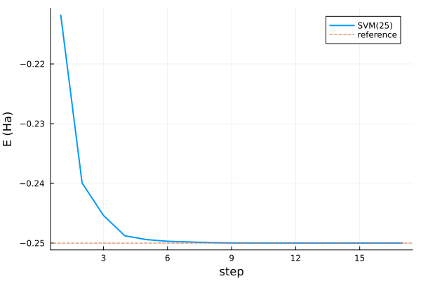
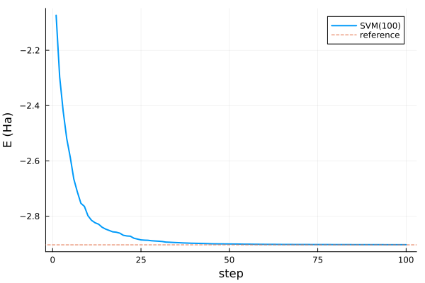
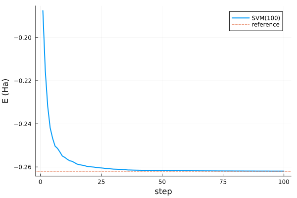
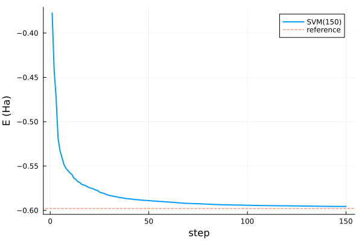

Code examples
Positronium
using FewBodyECG
using Plots
import Antique
H = Operators([1.0, 1.0], [+1.0, -1.0])
H += "Kinetic"
H += "Coulomb"
ps = Antique.CoulombTwoBody(
z₁ = 1, z₂ = -1, m₁ = 1.0, m₂ = 1.0, mₑ = 1.0, a₀ = 1.0, Eₕ = 1.0, ħ = 1.0
)
exact = Antique.energy(ps, n = 1)
sol = solve(H, SVM(basis = 25, candidates = 20, scale = 1.4))
plot(sol, exact)
Reference energies from FewBodyDB
The examples below compare ECG energies with published benchmarks collected in FewBodyDB.jl. Each entry is looked up by reference, system, observable and state; FewBodyDB.bib returns its BibTeX source.
Helium atom
The helium atom with an infinitely heavy nucleus, compared with the Suzuki–Varga benchmark [4].
using FewBodyECG
using FewBodyDB: db
using Plots
helium = Operators([1.0e15, 1.0, 1.0], [+2.0, -1.0, -1.0])
helium += "Kinetic"
helium += "Coulomb"
he_ref = db(:Suzuki2003Jul, "∞He", :energy, "¹Sᵉ").value
sol = solve(helium, SVM(basis = 100, candidates = 25, scale = 1.0))
(E₀ = sol.E₀, reference = he_ref, Δ = sol.E₀ - he_ref)(E₀ = -2.903227491301152, reference = -2.903724376984, Δ = 0.0004968856828480028)plot(sol, he_ref)
Positronium negative ion
Ps⁻ = e⁺e⁻e⁻ has three particles of equal mass, so no coordinate can be treated as fixed. It is bound below the Ps + e⁻ threshold at −0.25 Ha [4].
using FewBodyECG
using FewBodyDB: db
using Plots
ops = Operators([1.0, 1.0, 1.0], [+1.0, -1.0, -1.0])
ops += "Kinetic"
ops += "Coulomb"
ref = db(:Suzuki2003Jul, "Ps⁻", :energy, "¹Sᵉ").value
sol = solve(ops, SVM(basis = 100, candidates = 25, scale = 4.0))
(E₀ = sol.E₀, reference = ref, Δ = sol.E₀ - ref)(E₀ = -0.26192170664133685, reference = -0.2620050702328, Δ = 8.336359146315919e-5)plot(sol, ref)
HD⁺ without the Born–Oppenheimer approximation
The proton, deuteron and electron are all treated as dynamical particles. The reference is the non-Born–Oppenheimer ECG ground state of [5].
using FewBodyECG
using FewBodyDB: db
using Plots
mₚ, m_d = 1836.15267343, 3670.48296788
ops = Operators([mₚ, m_d, 1.0], [+1.0, +1.0, -1.0])
ops += "Kinetic"
ops += "Coulomb"
ref = db(:Bubin2005Jan, "HD⁺", :energy, (J = 0, v = 0)).value
sol = solve(ops, SVM(basis = 150, candidates = 25, scale = 1.0))
(E₀ = sol.E₀, reference = ref, Δ = sol.E₀ - ref)(E₀ = -0.5955855752528831, reference = -0.5978979685, Δ = 0.0023123932471168507)plot(sol, ref)